리눅스마스터-1급 (2013-03-09 기출문제)
1과목: 리눅스 실무의 이해
1. 운영체제의 주요 역할로 틀린 것은?
- 컴퓨터 하드웨어를 제어하고 편리한 사용자 인터페이스를 제공한다.
- 중앙처리장치 등과 대규모 집적회로로 이루어지며 PC의 기본 구성을 결정하게 된다.
- 사용자간의 자원(프로세서, 메모리, 입출력 장치 등) 사용을 스케줄링 한다.
- 입력과 출력을 용이하게 하며 오류 발생을 막고 복구를 지원한다.
(정답률: 69%)

2. 리눅스의 특징으로만 짝지어진 것으로 알맞은 것은?
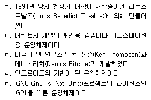
- ㄱ , ㄴ
- ㄱ , ㄴ , ㄹ
- ㄱ , ㄹ , ㅁ
- ㄷ , ㅁ
(정답률: 74%)
3. GPL(General Public License)과 관련된 것으로 틀린 것은?
- FSF(Free Software Foundation)
- GNU(Gnu is Not Unix)
- 카피라이트(Copyright)
- 카피레프트(Copyleft)
(정답률: 66%)
4. 리눅스에서 uname –r을 실행한 결과이다. 결과와 틀린 것은?
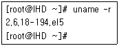
- 2 : 메이저 버전으로 획기적인 변화가 있을 때 바뀜
- 6 : 메이저 버전으로 개발버전을 의미한다.
- 6 : 마이너 버전으로 안정버전을 의미한다.
- 18 : 18번의 패치가 진행되었음을 의미한다.
(정답률: 65%)
5. 다음 중 리눅스 배포판으로 틀린 것은?
- Redhat
- Gnome
- Mandrake
- Ubuntu
(정답률: 74%)
6. 다음 설명은 RAID(Redundant Array of Independent Disks)에 대한 설명이다. 설명하는 레이드 레벨로 알맞은 것은?
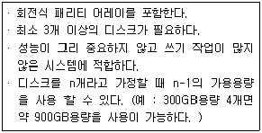
- RAID-0
- RAID-1
- RAID-5
- RAID-10
(정답률: 76%)
7. 다음은 /boot/grub/grub.conf의 내용으로 알맞은 것은?
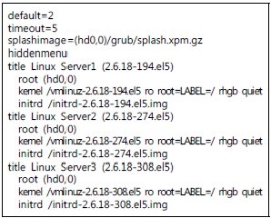
- Grub화면에서 아무런 키가 입력되지 않으면 10초 이후에 자동으로 부팅이 진행된다.
- 2.6.18-194.el5 커널 버전으로 부팅이 진행된다.
- 2.6.18-274.el5 커널 버전으로 부팅이 진행된다.
- 2.6.18-308.el5 커널 버전으로 부팅이 진행된다.
(정답률: 58%)
8. 다음은 각각의 디렉토리별 기능을 설명한 것 중 틀린 것은?
- / : 가장 최상위 디렉토리이며 디렉토리 구조의 시작이다.
- /etc : 리눅스 시스템에 관한 각종 환경 설정 파일들이 있는 디렉토리이다.
- /usr : 각종 시스템 로그파일과 사용자들에게 전송된 메일들을 임시로 저장한다.
- /boot : 리눅스 커널이 저장되며 부팅 관련된 파일들이 저장된다.
(정답률: 72%)
9. X윈도의 특징으로 틀린 것은?
- X윈도 환경에서는 마우스 사용이 어렵고 cp,mv 등의 명령어로 파일 관리가 용이하다.
- 아데나(Athena) 프로젝트의 일환으로 MIT에서 1984년 최초로 개발되었다.
- 리눅스를 비롯해 대부분의 유닉스에 채용되어 사용되고 있다.
- GUI환경을 제공하는 클라이언트/서버 시스템이다.
(정답률: 71%)
10. ( 괄호 )에 들어갈 내용으로 알맞은 것은?
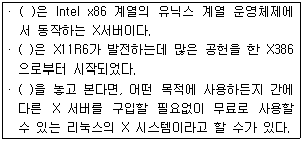
- X프로토콜
- XFree86
- Ext3
- Window Manager
(정답률: 74%)
11. 다음 중 Shell에 대한 특징으로 틀린 것은?
- “echo $SHELL” 명령어를 통해 쉘(Shell) 변경이 가능하다.
- 사용자와 운영체제 간에 대화하는 중간 창구 역할을 수행한다.
- 사용 할 수 있는 쉘(Shell)들의 경로는 /etc/shells 파일에 설정되어 있다.
- 기본 쉘은 /etc/passwd파일 변경 후 리부팅 하면 변경된 쉘(Shell) 사용이 가능하다.
(정답률: 66%)
12. 다음 중 아래 내용으로 알맞은 것은?
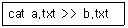
- a.txt의 내용을 b.txt파일에 합쳐서 화면에 나타내시오.
- a.txt를 b.txt로 파일을 변경하시오.
- 지금부터 입력하는 내용을 a.txt와 b.txt에 추가로 저장하시오.
- a.txt의 내용을 b.txt내용 아래쪽에 추가하여 저장하시오.
(정답률: 67%)
13. 프로세스의 정의로 틀린 것은?
- 각종 자원들을 요청하고 할당받을 수 있는 개체
- 프로그램을 일시중단하고 다른 프로그램을 끼워 넣어 실행시키는 작업
- 커널에 등록되고 커널의 관리하에 있는 작업
- 실행중인 프로그램 또는 실행중인 작업
(정답률: 71%)
14. 프로세스의 상태와 설명이 알맞은 것은?
- 준비 상태 : 프로세스가 처음 생성되는 상태
- 실행 상태 : 프로세서를 할당받기 위해 기다리고 있는 상태
- 대기 상태 : 프로그램 코드가 기억 자치로부터 읽혀지면서 프로세스에 의해 실행되고 있는 상태
- 지연 상태 : 프로세스가 기억 장치를 할당받지 못하고 있는 상태
(정답률: 64%)
15. 비선점 스케줄링(Nonpreemptive Scheduling)의 정책으로 틀린 것은?
- 대화형으로 운영되는 시분할 시스템이나 실시간 시스템 등에 적합하다.
- 프로세스의 종료 시간을 비교적 정확하게 예측 할 수 있다.
- 자원을 스스로 반납할 때까지 계속 사용하도록 허용하는 정책이다.
- 대표적인 알고리즘은 FIFO 기법이 있다.
(정답률: 55%)
16. OSI 7 계층 중에서 데이터 링크 계층(Data Link Layer)에서의 특징으로 틀린 것은?
- 프레임(Frame)의 시작 및 끝을 부가하여 프레임을 구성
- 최하위 계층으로 전기적인 신호를 전송해 주는 전송 매체
- 정해진 시간내에 확인 메시지가 안 오면 해당 프레임을 재전송한다.
- 전송 오류를 검출하여 오류가 발생한 프레임의 재전송을 요구한다.
(정답률: 63%)
17. UTP 다이렉트 케이블에 쓰이는 케이블의 배열 순서(568B타입)로 알맞은 것은?
- (흰+녹) - (녹색) - (흰+주) - (파랑) - (흰+파) - (주황) - (흰+갈) - (갈색)
- (흰+주) - (주황) - (흰+녹) - (파랑) - (흰+파) - (녹색) - (흰+갈) - (갈색)
- (흰+주) - (주황) - (흰+녹) - (파랑) - (흰+갈) - (갈색) - (흰+파) - (녹색)
- (흰+주) - (주황) - (흰+파) - (녹색) - (흰+녹) - (파랑) - (흰+갈) - (갈색)
(정답률: 71%)
18. WAN(Wide Area Network)의 특징으로 틀린 것은?
- 광역 통신망이라고 불리며, 하나의 도시 등 매우 넓은 네트워크 범위를 갖는다.
- 근거리 통신망이 여러 개 모여서 상호간에 고속 전송이 가능한 회선으로 호스트 컴퓨터에 접속하는 형태로 구성된다.
- 각 노드간의 연결은 지점간(Point-to-Point) 접속 방식을 사용한다.
- 통신 사업자가 제공하는 회선을 임차 또는 이용하여 정보의 축적, 가공, 변환, 처리를 통해 데이터에 높은 부가 가치를 부여하는 방식을 사용한다.
(정답률: 55%)
19. 리눅스 환경에서 새로운 IP를 설정하기 위해 정보를 갱신하거나 IP를 적용하기 위한 방법으로 틀린 것은?
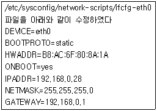
- /etc/rc.d/init.d/network restart
- ethtool eth0
- ifdown eth0 && ifup eth0
- shutdown –r now 명령어로 시스템을 리부팅 한다.
(정답률: 56%)
20. 아래 명령어들 중에서 GATEWAY를 확인하는 명령어로 틀린 것은?
- lsmod
- route
- ip route
- netstat –rn
(정답률: 66%)
2과목: 리눅스 시스템 관리
21. 다음 중 root(SuperUser) 사용자의 설명으로 틀린 것은?
- 사용자 권한 설정 및 제어
- 소프트웨어 설치 및 업데이트
- 네트워크 설정 및 테스트
- UID 1, GID 1 인 사용자
(정답률: 71%)
22. 다음 중 /etc/passwd 파일의 설명으로 틀린 것은?
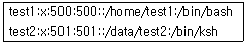
- test1 사용자의 UID 는 500 이다.
- test2 홈디렉토리는 /data/test2 이다.
- test2 사용자의 로그인 쉘은 /bin/ksh 이다.
- test2 사용자의 GID 는 500 이다.
(정답률: 70%)
23. 다음은 사용자 생성에 관련된 /etc/default/useradd 파일에 대한 내용이다. 설명으로 틀린 것은?
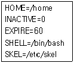
- 사용자 생성의 기본 홈디렉토리는 /home
- 사용자 생성후 기본 설정파일들이 /etc/skel 디렉토리 안에 파일들로 복사된다.
- 패스워드 만기일수는 0일 이다.
- 패스워드 만기일이 60일이 지나면 즉시 사용이 불가능 하게 된다.
(정답률: 55%)
24. 다음 useradd 명령어에 대한 결과에 대한 설명으로 틀린 것은?
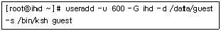
- guest 사용자의 기본그룹(1차그룹)은 ihd이다.
- guest 사용자의 UID 는 600 이다.
- guest 사용자의 홈디렉토리는 /data/guest이다.
- guest 사용자의 로그인 쉘은 /bin/ksh이다.
(정답률: 61%)
25. 다음 중 접속 중인 사용자의 정보를 알아보는 명령으로 틀린 것은?
- w
- who
- users
- id
(정답률: 46%)
26. 다음 중 리눅스 파일에 대한 설명으로 틀린 것은?
- 일반파일(Regular File) : 일반적으로 텍스트 파일이나 2진 파일을 나타냄
- 디렉토리(Directory) : 특별한 형식으로 디스크에 저장되며 디렉토리 명시적 시스템 호출을 통해서만 참조
- 특수파일(Special File) : 프린터, CD-ROM, 디스크와 같은 주변장치, 프로세스간 상호통신
- 슈퍼블록(Super Block) : 파일의 이름을 제외한 해당 파일의 모든 정보를 가지고 있으며, 각 파일 이름에 부여되는 고유한 번호이다.
(정답률: 50%)
27. 다음 중 허가권(Permission)에 대한 설명으로 틀린 것은?
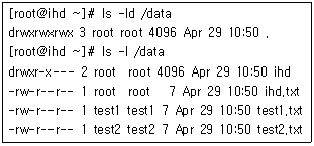
- 일반사용자(test1,test2)는 /data 디렉토리에 들어갈 수 있다.
- 일반사용자(test1)는 /data/ihd.txt 파일을 삭제 할 수 없다.
- 일반사용자(test2)는 /data/test1.txt 파일을 삭제할 수 있다.
- 슈퍼유저(root)는 /data/ihd.txt 파일을 삭제할 수 있다.
(정답률: 38%)
28. 다음과 같은 결과를 얻기 위한 ( 괄호 )안의 명령으로 알맞은 것은?
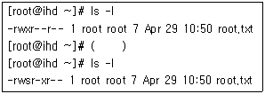
- chmod 744 root.txt
- chmod 4754 root.txt
- chmod 754 root.txt
- chmod g+x root.txt
(정답률: 52%)
29. 다음 중 디스크를 추가 후 파일시스템을 생성하여 마운트 하는 순서로 알맞은 것은?
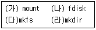
- (나)-(다)-(라)-(가)
- (나)-(가)-(다)-(라)
- (라)-(나)-(가)-(다)
- (다)-(나)-(라)-(가)
(정답률: 64%)
30. fsck 종료코드에 대한 설명으로 틀린 것은?
- 0 : 에러없음
- 1 : 파일시스템 에러가 고쳐지지 않음
- 2 : 파일 시스템 재부팅 필요
- 4 : 파일 시스템이 고쳐지지 않은 에러가 남아 있음
(정답률: 49%)
31. 디스크를 이미지 형태로 백업하거나 파일의 포맷 등 형식을 바꾸는 명령어로 스왑파일을 만들거나 디바이스 초기화 등을 시킬 때 사용하는 명령어로 알맞은 것은?
- tune2fs
- e2fsck
- dd
- debugfs
(정답률: 49%)
32. 쿼터(quota) 계정 용량 할당에 대한 설명으로 틀린 것은?
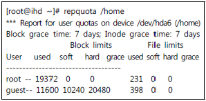
- guest 사용자의 현재 사용용량은 11600KB 이다.
- guest 사용자의 현재 파일 및 디렉토리 사용량은 398 개다.
- guest 사용자는 10240KB 용량을 절대로 넘어설 수 없다.
- guest 사용자는 20480KB 용량을 절대로 넘어설 수 없다.
(정답률: 63%)
33. 하드디스크의 일부를 메모리처럼 사용할 수 있게 해주는 기술로 알맞은 것은?
- 스왑(swap)
- 파티션(partition)
- 메모리(memory)
- 파일시스템(filesystem)
(정답률: 68%)
34. 다음 중 가상메모리(swap) 에 관련된 명령어로 틀린 것은?
- mkswap
- free
- swapon
- df
(정답률: 58%)
35. 다음 중 리눅스의 실행레벨(runlevel) 에 대한 설명으로 틀린 것은?
- 0 - reboot
- 1 - single user mode
- 3 - Full Multiuser
- 5 – X11
(정답률: 46%)
36. 다음 중 ps 명령어의 출력필드에 대한 설명으로 틀린 것은?
- USER : 프로세스 소유자의 계정이름
- PPID : 부모 프로세스의 PID
- TTY : 프로세스와 관련된 터미널 포트
- RSS : 가상 메모리
(정답률: 56%)
37. 리눅스 환경에서 새로운 프로세스 생성시 자신의 사본을 생성하여 자식프로세스로 생성하는 명령어로 알맞은 것은?
- cron
- fork
- nice
- nohup
(정답률: 63%)
38. 다음 RPM 질의 옵션중 /etc/fstab 파일을 포함하는 패키지에 대한 질문을 수행하는 명령어로 알맞은 것은?
- rpm -ql /etc/fstab
- rpm -qf /etc/fstab
- rpm -qa |grep /etc/fstab
- rpm –qc /etc/fstab
(정답률: 35%)
39. 다음에 설명하는 내용으로 알맞은 것은?
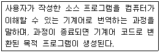
- 컴파일(Compile)
- 컴파일러(Compiler)
- 디버깅(Debugging)
- 소스코드(Source Code)
(정답률: 64%)
40. 다음은 tar 명령어로 묶어서 압축하는 과정이다. ( 괄호 )안에 들어가는 옵션으로 알맞은 것은?
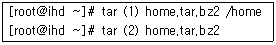
- (1) : zcvf (2) : zxvf
- (1) : cvf (2) : xvf
- (1) : jcvf (2) : jxvf
- (1) : jxvf (2) : jcvf
(정답률: 49%)
41. 다음 중 CPU의 모델 정보를 확인하고 싶다. 확인 할 수 있는 명령어로 알맞은 것은?
- cat /proc/cmdline
- cat /proc/cpuinfo
- cat /proc/crypto
- cat /proc/interrupts
(정답률: 68%)
42. 다음 중 하드웨어와 관련된 정보가 나오는 파일 또는 명령어로 틀린 것은?
- lspci
- cat /etc/sysconfig/hwconf
- cat /etc/aliases
- dmidecode
(정답률: 50%)
43. 플러그 앤 플레이(PnP)에 대한 설명으로 틀린 것은?
- 각종 하드웨어(장치)를 찾아낸 장소를 자동적으로 소프트웨어에 알려준다.
- 물리적 장치와 이것을 조작하는 소프트웨어와 일치시키고, 장치와 드라이버 사이에 통신“채널”을 만드는 것이다.
- 일반적인 교환 방식의 디지털 데이터네트워크를 지칭하는 일련의 표준이다.
- I/O,IRQ,(ISA 패스만) DMA 채널, 메모리 영역 등의 “버스자원”을 드라이버와 하드웨어 양쪽에 할당한다.
(정답률: 33%)
44. 커널에 적재된 모듈을 확인하는 명령어로 알맞은 것은?
- insmod
- lsmod
- rmmod
- modprobe
(정답률: 57%)
45. 리눅스 커널을 계속적으로 업그레이드하여 컴파일 해야 하는 이유로 틀린 것은?
- 버그를 수정하고 속도를 개선
- 새로운 하드웨어의 지원
- 시스템 관리 능력의 개선
- 라이브러리 패키지의 버전 업데이트
(정답률: 50%)
46. 다음 중 커널 컴파일을 위한 커널을 설정하는 명령어로 틀린 것은?
- make xconfig
- make menuconfig
- make config
- make conf
(정답률: 47%)
47. 새로 디스크를 구매하여 디스크에 파티션을 만들어 포맷하려고 한다. 포맷 타입이 틀린 것은?
- mkfs.fat32 /dev/sda2
- mkfs.ext3 /dev/sda2
- mkfs.ext4 /dev/sda2
- mkfs.vfat /dev/sda2
(정답률: 42%)
48. 다음 중 디스크 마운트 관련된 정보를 볼 수 없는 내용으로 알맞은 것은?
- cat /proc/partitions
- mount
- df -h
- cat /proc/mounts
(정답률: 37%)
49. 다음과 같은 사항이 발생했을 경우 수정되어야 하는 파일로 알맞은 것은?
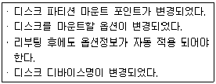
- /etc/fstab
- /etc/passwd
- /etc/sysconfig/network
- /etc/hosts
(정답률: 62%)
50. 프린터기와 관련된 명령어로 틀린 것은?
- lpadmin
- lp
- lpq
- printf
(정답률: 55%)
51. 다음에서 설명하는 내용으로 알맞은 것은?
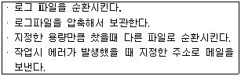
- syslogd
- klogd
- logrotate
- dmesg
(정답률: 55%)
52. 시스템의 접속에 관한 로그파일로 언제, 누가, 어디에서 어떻게 접속 했는가에 대한 로그기록을 남기는 파일로 알맞은 것은?
- /var/log/messages
- /var/log/secure
- /var/log/boot.log
- /var/log/dmesg
(정답률: 52%)
53. 다음은 /etc/syslog.conf 파일의 내용설명으로 틀린 것은?
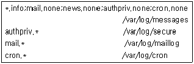
- messages: 모든 info 메시지를 기록한다.
- secure : 개인인증관련 모든 메시지를 기록한다.
- maillog : 모든 메일관련 메시지를 기록한다.
- cron : 모든 cron 스케줄 관련 메시지를 기록한다.
(정답률: 44%)
54. 갑작스런 장애발생시 시스템의 로컬외에 모든 외부 접속을 차단하는 방법으로 알맞은 것은?
- /etc/nologin
- /etc/securetty
- /etc/passwd
- /etc/shadow
(정답률: 47%)
55. "사용자 정보의 저장방법과 관계없이 프로그램들이 투명하게 사용자를 인증하고, 사용자를 인증하는 어떤 프로그램의 권리를 부정하도록 구성할 수 있고, 어떤 사용자들에게는 인증을 허가할 수도 있고 어떤 프로그램이 인증을 시도할 때 경고를 줄 수도 있으며, 모든 사용자들의 로그인 권한을 없앨 수도 있다." 다음에서 설명하는 인증모델로 알맞은 것은?
- su
- passwd
- shadow
- PAM
(정답률: 55%)
56. 시스템 관리자가 사용자로 하여금 정상적으로 루트 권한을 가지고 프로그램들을 실행 할 수 있게 하도록 허용해주는 것으로 알맞은 것은?
- tripwire
- sudo
- SETUID
- su
(정답률: 47%)
57. "시스템을 설치한 후 사용자들이 시스템을 사용해 보기 전에 시스템의 모든 파일들과 프로그램들을 백업한다." 다음 시스템 백업의 설명으로 알맞은 것은?
- 데이 제로 백업(A Day-zero Backup)
- 풀 백업(A Full Backup)
- 변경분 백업(An Incremental Backup)
- 단순 백업
(정답률: 50%)
58. 다음 중 백업 관련 유틸리티에 대한 설명으로 틀린 것은?
- tar : 파일이나 디렉토리들을 하나의 파일로 묶어 압축하는 유틸리티
- cpio : 장치파일이나 네트워크 파일등의 특수 파일에 백업이 가능한 유틸리티
- dump : 파일시스템 자체를 직접 백업하면 전체 및 증분백업 등이 가능하다.
- dd : 디스크나 파티션 전체를 백업할 때 사용하며, 복원 시 restore 명령어를 사용한다.
(정답률: 48%)
59. 다음에서 설명하는 내용으로 알맞은 것은?
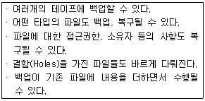
- dump
- dd
- rdist
- rmt
(정답률: 55%)
60. dump 명령으로 백업된 데이터를 하나씩 확인하면서 복원하는 명령어의 옵션으로 ( 괄호 )안에 알맞은 것은?
- -if
- -rf
- -r
- -0f
(정답률: 41%)
3과목: 네트워크 및 서비스의 활용
61. 다음 중 웹과 관련된 설명으로 틀린 것은?
- HTTP는 인터넷에서 하이퍼텍스트(Hypertext) 문서를 교환하기 위해 사용되는 프로토콜이다.
- 초기의 웹 서비스는 동적인 HTML페이지를 바탕으로 구성되었으나, 최근에는 정적인 HTML로 바뀌고 있다.
- 웹 표준은 W3C 컨소시엄에서 제정하고 있다.
- 현재 HTML 5가 기술 표준으로 제시되고 있다.
(정답률: 56%)
62. 다음 중 아파치 웹 서버에 대한 설명으로 틀린 것은?
- 아파치 웹 서버는 NCSA httpd를 기반으로 시작되었다.
- 1.3 버전부터 시작하였으며, 현재는 2.0, 2.2, 2.4 버전이 배포되고 있다.
- 리눅스 및 유닉스에서만 사용가능하다.
- 2.0 버전부터는 PHP 연동 설치시 동적 모듈 방식인 DSO(Dynamic Shared Object)만 지원한다.
(정답률: 54%)
63. 다음 중 웹 디렉토리에 접근시 가장 먼저 인식 되는 파일명을 index.htm으로 변경하고자 할 때 httpd.conf에서 설정해야 할 항목으로 알맞은 것은?
- ServerRoot
- DirectoryIndex
- DocumentRoot
- ServerAdmin
(정답률: 42%)
64. "아파치 웹 서버 데몬을 실행하기 위해서는 ( (ㄱ) ) 명령어를 사용해야 하지만, 추가로 제공되는 ( (ㄴ) ) 스크립트를 이용하면 다양한 인자값(argument)을 지정을 통해 손쉽게 시작, 중지, 재시작 등을 할 수 있다." 다음 중 ( 괄호 )안에 들어갈 내용으로 알맞은 것은?
- (ㄱ) apachectl - (ㄴ) httpd
- (ㄱ) httpd - (ㄴ) apachectl
- (ㄱ) ab - (ㄴ) apxs
- (ㄱ) apxs - (ㄴ) ab
(정답률: 42%)
65. 다음 중 아파치 웹 서버에서 특정 디렉토리에 대한 사용자 인증을 할 때 생성해야 될 파일로 알맞은 것은?
- .htaccess
- .htpasswd
- htaccess
- htpasswd
(정답률: 39%)
66. 다음 중 아파치 2.0 이후 버전의 httpd.conf에서 포트번호를변경할 때 설정하는항목으로 알맞은것은?
- Port
- Listen
- ServerType
- AddType
(정답률: 46%)
67. 다음 중 MySQL 5.5 버전의 소스 파일 설치 시 기존 버전의 configure 및 make을 대체해서 사용하는 방법으로 알맞은 것은?
- cmake
- automake
- autoconf
- makeconf
(정답률: 50%)
68. 웹 서버에 PHP 5.5 버전 설치 후 아래의 test.php 파일로 테스트했더니 정상적으로 나타나지 않았다. 다음 중 php.ini에서 변경해야 될 항목과 설정 값으로 알맞은 것은?
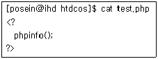
- open_short_tag = On
- open_short_tag = Off
- short_open_tag = On
- short_open_tag = Off
(정답률: 35%)
69. 웹 서버를 이용하는 클라이언트와 서버 사이에 전달되는 데이터 암호를 위해 SSL을 추가 설정하였다. 다음 중 SSL이 기본적으로 사용하는 포트번호로 알맞은 것은?
- 143
- 443
- 8080
- 8888
(정답률: 46%)
70. 다음 중 삼바(Samba)와 관련된 설명으로 틀린 것은?
- SMB 프로토콜을 기반으로 시작하여 현재는 CIFS로 표준화가 이루어진 상태이다.
- 윈도우 클라이언트와 리눅스 및 유닉스 서버와의 파일 및 프린터를 공유해준다.
- TCP/IP 프로토콜상에서 NetBIOS 프로토콜은 필요하지 않는다.
- 마이크로소프트의 LAN 매니저를 지원한다.
(정답률: 49%)
71. 다음 중 삼바 환경 설정파일인 smb.conf의 오류를 검사할 때 사용하는 명령으로 알맞은 것은?
- testparm
- smbstatus
- smbclient
- tdpdump
(정답률: 44%)
72. 다음 중 삼바 환경 설정파일인 smb.conf에서 접속 가능한 호스트를 지정하는 항목으로 알맞은 것은?
- host allow
- hosts allow
- allow host
- allow hosts
(정답률: 42%)
73. 다음 조건으로 /etc/exports 파일에 설정할 때 알맞은 것은?
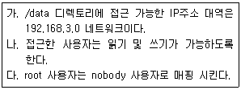
- /data 192.168.3/255.255.255.0(rw,no_root_squash)
- /data 192.168.3/255.255.255.0(rw,root_squash)
- /data 192.168.3.0/24(rw,no_root_squash)
- /data 192.168.3.0/24(rw,root_squash)
(정답률: 34%)
74. 다음 중 NFS 클라이언트에서 NFS 서버의 export 항목의 리스트를 확인할 때 사용하는 명령어로 알맞은 것은?
- exportfs
- showmount
- nfsstat
- nhfsstone
(정답률: 37%)
75. NFS는 TCP Wrapper를 이용하여 /etc/hosts.allow와 /etc/hosts.deny 파일에서 접근 제어가 가능하다. 이 파일에 사용하는 데몬 이름으로 알맞은 것은?
- rpc
- nfsd
- portmap
- mountd
(정답률: 31%)
76. 다음 중 FTP 서버 프로그램으로 틀린 것은?
- gftp
- ProFTPD
- vsftp
- wu-ftpd
(정답률: 34%)
77. 다음 중 ProFTP 설정 파일에서 root 계정의 접속을 허가 또는 거부할 때 사용하는 항목으로 알맞은 것은?
- RootLogin
- RootAccess
- PertmitRootLogin
- RootAllow
(정답률: 29%)
78. 다음 중 FTP 설정 파일의 Limit 관련 명령어에 대한 설명으로 틀린 것은?
- MKD : 새로운 디렉토리를 생성과 관련된 제한
- DELE : 파일 삭제와 관련된 제한
- STOR : 서버에서 클라이언트로의 파일 전송과 관련된 제한
- WRITE : 파일 또는 디렉토리 쓰기, 생성, 삭제와 관련된 제한
(정답률: 46%)
79. 다음 ( 괄호 ) 안에 들어갈 내용으로 알맞은 것은?
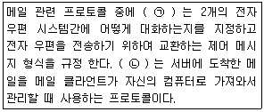
- (ㄱ) SMTP (ㄴ) IMAP
- (ㄱ) SMTP (ㄴ) POP3
- (ㄱ) POP3 (ㄴ) IMAP
- (ㄱ) IMAP (ㄴ) POP3
(정답률: 45%)
80. 다음 중 MDA(Mail Delivery Agent) 역할을 하는 프로그램으로 알맞은 것은?
- sendmail
- qmail
- postfix
- procmail
(정답률: 30%)
81. 다음은 메일과 관련된 특정 파일의 일부이다. ( 괄호 )안에 들어갈 파일명으로 알맞은 것은?
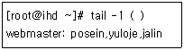
- /etc/sendmail.cf
- /etc/sendmail.mc
- /etc/aliases
- /etc/mail/access
(정답률: 40%)
82. 다음 중 메일 관련 호스트들을 등록하는 파일로 메일 서버와 네임 서버를 함께 운영한다면 반드시 설정이 필요한 파일로 알맞은 것은?
- .forward
- aliases
- aceess
- local-host-names
(정답률: 41%)
83. 다음은 파일 수정후 등록하는 과정으로 ( 괄호 ) 안에 들어갈 명령어로 알맞은 것은?
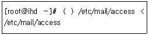
- mailq
- makemap hash
- sendmail
- newaliases
(정답률: 39%)
84. 다음 중 여러 개의 사이트를 웹호스팅 할 경우에 각각의 사이트에서 admin이라는 메일 사용자를 이용할 수 있도록 설정하는 파일로 알맞은 것은?
- /etc/mail/access
- /etc/mail/virtusertable
- /etc/mail/mailertable
- /etc/mail/domaintable
(정답률: 41%)
85. 다음 중 메일 서버로 운영 중인 도메인을 관련 파일에 등록하였으나 인식하지 못할 경우에 강제로 인식하도록 설정하는 sendmail.cf 파일의 항목으로 알맞은 것은?
- Fw
- Dj
- DM
- Dn
(정답률: 43%)
86. 다음 중 외부로 보내는 메일이 잘 전송되었는지 확인할 때 사용하는 명령어로 알맞은 것은?
- mailq
- makemap
- mailx
- newaliases
(정답률: 48%)
87. 다음 중 메일 서버와 관련 있는 네임 서버의 존 파일 레코드 타입으로 알맞은 것은?
- NS
- MX
- PTR
- CNAME
(정답률: 37%)
88. 다음 중 xinetd 설정파일에서 사용되는 속성에 대한 설명으로 틀린 것은?
- per_source : 동일 호스트에서 접속할 수 있는 수를 지정
- cps : 동시에 서비스할 수 있는 서버의 최대 개수를 지정
- access_times : 서비스를 이용할 수 있는 시간을 지정
- redirect : 서비스를 다른 호스트에게 넘길 때 사용할 IP를 지정
(정답률: 37%)
89. 다음 중 xinetd 서비스 접근을 only_from을 사용하여 192.168.22.0 네트워크 대역만을 허가할 때 사용하는 표기법으로 알맞은 것은?
- 192.168.22
- 192.168.22.
- 192.168.22.0/24
- 192.168.22.0/255.255.255.0
(정답률: 47%)
90. 다음은 DNS 서버의 존 파일(Zone) 일부이다. ( 괄호 )안에 들어갈 내용으로 알맞은 것은?
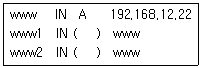
- CNAME
- MX
- NS
- PTR
(정답률: 45%)
91. 다음 중 DNS 서버의 환경 설정 파일의 문법적 오류를 검사할 때 사용하는 명령어로 알맞은 것은?
- named-checkconf
- rndc
- dnssec-keygen
- rndc.conf
(정답률: 51%)
92. 다음 중 프록시(Proxy) 서버 설정시 접근 제어 할 때 사용하는 항목으로 알맞은 것은?
- squid_access
- http_access
- Allow from
- Only_from
(정답률: 30%)
93. 다음 중 NIS 서버를 동작시키기 위해 필요한 데몬으로 알맞은 것은?
- xinetd
- autofs
- cups
- portmap
(정답률: 35%)
94. 다음 중 NIS 및 NFS와 같이 RPC기반으로 동작하는 서비스의 정보를 출력하는 명령어로 알맞은 것은?
- rpcstat
- rpcinfo
- ypbind
- ypserv
(정답률: 47%)
95. DHCP 서버 환경 설정 파일에서 특정호스트에게 고정 IP를 할당하려고 한다. ( 괄호 )안에 들어갈 내용으로 알맞은 것은?
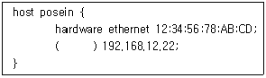
- host-address
- bind-address
- fixed-address
- ip-address
(정답률: 46%)
96. 다음 중 DoS 공격에 대한 설명으로 알맞은 것은?
- 루트 권한을 획득하는 공격이다.
- 대표적인 공격법에는 Honeypot이 있다.
- 데이터를 파괴, 변조, 훔쳐가는 것을 목적으로 하는 공격이다.
- 시스템의 자원을 독점하거나 모두 사용해 버리는 공격이다.
(정답률: 46%)
97. 다음에서 설명하는 것으로 알맞은 것은?
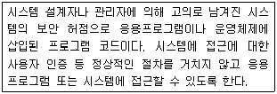
- Buffer Overflow
- SYN Flooding
- Back Door
- IP Spoofing
(정답률: 54%)
98. 다음 중 보안 관련 대처 방안 조합으로 틀린 것은?
- 침입차단시스템 - iptables
- 침입탐지시스템 - snort
- 침입방지시스템 - RSA, DSA
- 스니핑 방지 - SSL, PGP
(정답률: 40%)
99. 다음에서 설명하는 것으로 알맞은 것은?
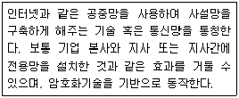
- DMZ
- VPN
- IDS
- IPS
(정답률: 52%)
100. 다음은 iptables 관련 스크립트의 일부이다. ( 괄호 )안에 들어갈 내용으로 알맞은 것은?
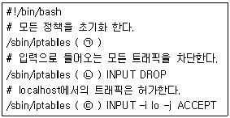
- (ㄱ) -F (ㄴ) -P (ㄷ) -A
- (ㄱ) -P (ㄴ) -F (ㄷ) -A
- (ㄱ) -F (ㄴ) -A (ㄷ) -P
- (ㄱ) -P (ㄴ) -A (ㄷ) -F
(정답률: 30%)